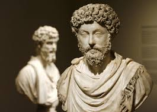

What is Stoicism?
Stoicism is an ancient philosophy that teaches us to focus on what we can control and accept what we cannot. Practiced by emperors, soldiers, writers, and thinkers, Stoicism encourages clarity, discipline, and inner peace.
Core Principles
- Control: Distinguish between what is in your control and what is not.
- Virtue: Live with wisdom, justice, courage, and moderation.
- Perception: Your judgments shape your reality.
- Action: Act according to virtue, not impulse.